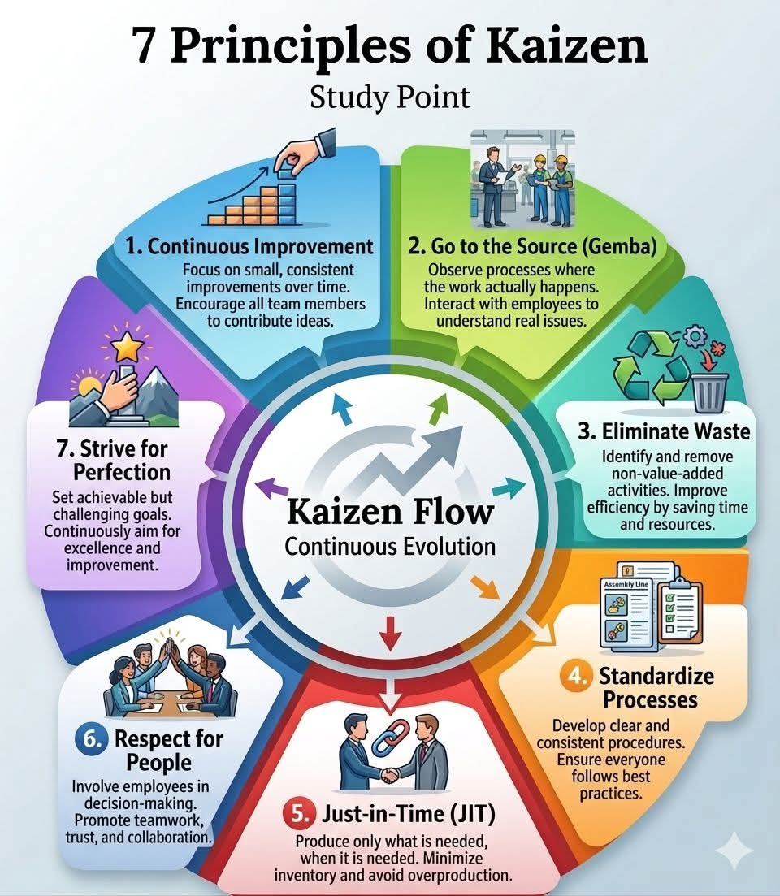

Kabut tipis perlahan turun menyelimuti kawasan Dago Pakar, Bandung Utara, membawa hawa dingin yang menembus celah-celah ventilasi Pusat Kajian Inovasi Terapan (PKIT). Di lantai tiga gedung berdesain industrial minimalis itu, aroma kopi arabika Priangan bercampur dengan ketegangan yang pekat. Empat orang profesional kelas menengah, dengan latar belakang pendidikan magister dari universitas-universitas terkemuka, duduk melingkari meja bundar di ruang rapat utama. Kaca jendela yang berembun menjadi saksi bisu dari kebuntuan proyek terbesar mereka tahun ini: Pengembangan Sistem Pengolahan Limbah Terpadu untuk kawasan urban.
Proyek ini tertunda dua bulan dari jadwal, anggaran menipis, dan moral tim peneliti di laboratorium berada di titik terendah.
Arya, sang Direktur Proyek yang selalu tampil rapi dengan kemeja oxford dan kacamata frameless-nya, memijat pelipisnya. Di sebelahnya, Citra, Kepala Penjamin Mutu (Quality Assurance) yang perfeksionis, sedang membolak-balik laporan tebal dengan kening berkerut. Di seberang mereka, Bima, Kepala Operasional Lapangan yang lebih suka mengenakan kemeja flanel dan sepatu bot, tampak gelisah mengetuk-ngetukkan pena. Sementara itu, Diana, Manajer Pengembangan Organisasi (HR) yang elegan dengan pashmina pastelnya, menatap rekan-rekannya dengan sorot mata analitis namun penuh empati.
"Kita tidak bisa terus beroperasi dengan gaya pemadam kebakaran seperti ini," Arya memecah keheningan. Suaranya bariton, tenang namun tegas. Ia menyalakan proyektor, menampilkan sebuah infografis di layar utama.

"Saya menghabiskan akhir pekan kemarin meninjau ulang metodologi manajemen kita," lanjut Arya, berdiri dan menunjuk ke layar. "Sistem kita terlalu kaku. Kita mengharapkan lompatan inovasi yang besar, tapi mengabaikan detail-detail kecil yang justru menghambat kita. Mulai hari ini, kita akan merestrukturisasi manajemen proyek ini menggunakan '7 Principles of Kaizen' atau 7 Prinsip Kaizen."
Bima menyandarkan punggungnya. "Kaizen? Filosofi Jepang itu? Arya, kita ini ilmuwan dan insinyur di Bandung, bukan pekerja perakitan mobil di Toyota."
"Prinsip manajerial tidak mengenal batas industri, Bim," sela Citra, matanya berbinar melihat struktur dan sistem yang jelas di layar. "Kalau itu bisa mengefisiensikan pabrik raksasa, itu pasti bisa menyelamatkan proyek penelitian kita yang berantakan ini. Coba jelaskan, Ar."
Arya mengangguk, mengapresiasi dukungan Citra. "Tepat sekali. Kaizen bukan sekadar alat, ini adalah studi poin, titik pembelajaran tentang evolusi yang berkelanjutan. Mari kita bedah satu per satu dan refleksikan ke proyek kita."
Prinsip 1: Continuous Improvement (Perbaikan Berkelanjutan)
Arya menunjuk ke bagian pertama infografis yang bergambar ilustrasi tangan sedang menyusun balok-balok grafik yang terus menanjak ke atas.
"Bagaimana contoh aplikasinya untuk lab kita?" tanya Diana, mulai mencatat di tabletnya.
"Contohnya begini," jawab Arya. "Selama ini kita selalu menunggu akhir bulan untuk mengevaluasi desain prototipe mesin pengolah limbah kita. Mulai besok, kita ubah. Setiap sore, sebelum shift berakhir, adakan briefing 15 menit. Minta satu ide perbaikan sekecil apa pun dari para teknisi. Entah itu sekadar mengubah posisi tuas mesin agar lebih ergonomis, atau menyesuaikan suhu pemanasan sebesar 0,5 derajat. Perbaikan kecil yang diakumulasi setiap hari akan memberikan dampak masif dalam sebulan tanpa membebani tim."
Bima mengangguk perlahan. "Masuk akal. Ini mengurangi tekanan 'harus sempurna' di awal."
Prinsip 2: Go to the Source / Gemba (Pergi ke Sumbernya)
"Selanjutnya, ini untukmu, Bim," Arya beralih ke prinsip kedua. Di layar, tampak gambar seorang manajer berjas sedang berdiri di area pabrik bersama dua pekerja berhelm proyek.
Bima tersenyum tipis. "Maksudmu, kalian yang terlalu sering duduk di ruang ber-AC ini harus turun ke lab yang bau bahan kimia itu?"
"Tepat," sahut Citra yang langsung menangkap arah pembicaraan. "Kita sering berdebat soal data efisiensi di ruangan ini, padahal kita tidak melihat langsung bagaimana teknisi mengoperasikan alatnya."
"Contoh riilnya begini," tambah Arya. "Minggu lalu kita komplain kenapa data sensor kualitas air selalu terlambat masuk. Daripada saya mengirim email teguran atau Bima berteriak di grup perpesanan, besok kita berempat akan turun ke Gemba, ke ruang laboratorium lantai dasar. Kita amati langsung. Berinteraksi dengan teknisi di sana. Kita mungkin akan menemukan bahwa masalahnya bukan teknisi yang malas, tapi letak komputer input data yang terlalu jauh dari mesin sensor, sehingga mereka harus berjalan bolak-balik."
Prinsip 3: Eliminate Waste (Menghilangkan Pemborosan)
Giliran Citra yang mengambil alih saat panah presentasi bergeser ke prinsip ketiga. Gambar di layar menunjukkan simbol daur ulang berwarna hijau beserta tempat sampah.
Diana menatap layar. "Lalu, apa yang direpresentasikan oleh gambar tempat sampah dan simbol daur ulang itu dalam konteks manajerial kita?"
"Itu metafora, Di," jelas Citra. "Pemborosan di sini bukan sekadar sampah fisik. Ingat birokrasi pengajuan bahan kimia minggu lalu? Teknisi lab harus mengisi formulir kertas, meminta tanda tangan Bima, lalu membawanya ke asistenku, lalu menunggu approval Arya. Itu adalah waste berupa waktu tunggu dan proses berlebih."
"Lalu contoh penyelesaiannya?" tanya Arya menguji.
"Kita buang aktivitas non-nilai tambah itu," jawab Citra mantap. "Mulai besok, kita digitalisasi formulir pengadaan. Begitu teknisi klik submit, notifikasinya langsung masuk ke ponsel kita semua secara bersamaan. Approval bisa dilakukan dengan satu ketukan. Kita hemat kertas (daur ulang) dan kita membuang prosedur yang memperlambat (tempat sampah). Efisiensi waktu yang dihemat bisa digunakan teknisi untuk fokus pada eksperimen, bukan mengurus administrasi."
Prinsip 4: Standardize Processes (Standarisasi Proses)
Citra masih mendominasi diskusi. Layar kini menampilkan gambar sebuah papan klip (clipboard) yang berisi kertas dengan daftar periksa (checklist).
Bima menyela, "Citra, bukannya lab kita sudah punya SOP tebal yang kau buat tahun lalu?"
"Punya SOP tebal tidak sama dengan memiliki proses yang standar, Bim," balas Citra tajam namun tenang. "SOP kita terlalu rumit. Gambar clipboard dan checklist ini adalah kuncinya. Sesuatu yang standar harus mudah dilihat, dimengerti, dan dieksekusi secara konsisten oleh siapa pun."
"Berikan contoh konkretnya di lapangan, Cit," pinta Diana.
"Baik. Kasus kalibrasi alat pengukur pH limbah. Saat ini, teknisi A mengkalibrasi dengan cara mengocok larutan 3 kali, sementara teknisi B mengocoknya 5 kali. Hasilnya fluktuatif. Contoh standarisasi: Saya akan membuat checklist satu halaman yang dilaminating dan ditempel tepat di dinding sebelah alat ukur. Langkah 1, 2, 3 yang sangat spesifik dan visual. Tidak ada lagi interpretasi pribadi. Semua orang melakukan praktik terbaik yang sama persis, setiap saat."
Hujan mulai turun membasahi kaca jendela, khas cuaca siang hari di Bandung Utara. Diana bangkit menuju mesin pembuat espresso di sudut ruangan, membuatkan kopi untuk rekan-rekannya. Suasana manajerial yang kaku perlahan mencair oleh aroma kopi yang menenangkan.
"Kalian tahu," kata Diana sambil membagikan cangkir, "pendekatan Kaizen ini sangat logis. Tapi sebuah sistem yang brilian hanya akan menjadi tumpukan kertas jika manusianya tidak diurus. Sistem ini menuntut kedisiplinan tingkat tinggi."
Arya menerima kopinya. "Itulah mengapa tiga prinsip terakhir ini sangat krusial, dan ini membutuhkan sentuhanmu dan Bima." Ia kembali mengklik remote proyektornya.
Prinsip 5: Just-in-Time / JIT (Tepat Waktu)
Layar menunjukkan gambar dua lengan berjas yang saling berjabat tangan, dan di atasnya terdapat ikon rantai yang saling terkait.
"Jabat tangan dan rantai," Bima bergumam merenungkan gambar tersebut. "Rantai pasokan yang terhubung kuat dan kesepakatan yang presisi."
"Betul," sahut Arya. "Di ranah manufaktur, ini berarti tidak menumpuk suku cadang di gudang. Di pusat kajian ilmiah kita, ini tentang manajemen sumber daya. Berapa banyak ruang lab kita yang terbuang karena kita memesan komponen reaktor sebulan sebelum tahap pengujiannya dimulai?"
"Hampir sepertiga ruangan tertutup kardus komponen," aku Bima sambil mendesah. "Ruang gerak teknisi jadi sempit, risiko tersenggol alat jadi tinggi."
"Itu dia overproduction dan excess inventory kita," kata Arya. "Contoh implementasi JIT: Mulai sekarang, kita berkoordinasi erat dengan pihak supplier. Jabat tangan itu melambangkan kemitraan. Kita pesan komponen modul B hanya ketika perakitan modul A sudah mencapai 90%. Barang datang tepat saat teknisi siap memasangnya (rantai tersambung sempurna). Ruang lab tetap luas, aliran kerja mulus, dan arus kas proyek kita tidak tertahan pada barang yang menganggur."
Prinsip 6: Respect for People (Menghargai Manusia)
Diana meletakkan cangkirnya dan maju mendekati layar. Ikon yang muncul adalah sekelompok orang berseragam rapi yang sedang melakukan high-five (tos) di atas meja rapat, menandakan selebrasi dan kekompakan.
Diana menatap ketiga rekannya. "Manajemen sering kali merasa mereka yang paling tahu. Kaizen mengajarkan bahwa rasa hormat tertinggi kepada tim adalah dengan mendengarkan mereka. Gambar high-five itu bukan sekadar perayaan basa-basi, itu simbol dari hierarki yang melebur menjadi kolaborasi."
"Contoh penerapannya harus dimulai besok juga," papar Diana dengan antusiasme yang menular. "Setiap hari Jumat, kita adakan sesi 'Forum Inovasi Lepas'. Tidak ada meja manajer dan kursi bawahan. Kita duduk lesehan di ruang rekreasi. Kita biarkan para teknisi muda dan asisten peneliti yang mempresentasikan kendala mereka minggu itu, dan mereka yang merumuskan solusinya. Kita hanya bertindak sebagai fasilitator yang memberikan lampu hijau. Ketika mereka merasa dipercaya untuk mengambil keputusan atas pekerjaan mereka sendiri, rasa kepemilikan (sense of ownership) mereka terhadap proyek ini akan meroket."
Prinsip 7: Strive for Perfection (Berusaha Mencapai Kesempurnaan)
Rapat telah berlangsung hampir dua jam. Hujan di luar mulai reda, meninggalkan kabut yang semakin tebal namun dengan udara yang terasa lebih bersih. Arya menggeser ke slide terakhir. Di sana terpampang ilustrasi puncak gunung bersalju dengan sebuah bintang bersinar terang di puncaknya.
"Gambar gunung itu merepresentasikan perjalanan yang mendaki dan melelahkan, sedangkan bintang adalah visi ideal kita," gumam Citra, menganalisis visual tersebut.
"Benar sekali, Citra. Kesempurnaan mungkin mustahil, tapi berusaha mencapainya adalah kewajiban manajerial," jelas Arya. "Kita tidak akan pernah puas dengan status quo. Setelah prototipe pertama ini berhasil, kita tidak akan berhenti."
"Contohnya: Target KPI kita saat ini adalah prototipe mampu memproses 100 liter limbah per jam dengan kemurnian 80%. Itu tujuan kita saat ini. Jika bulan depan kita berhasil mencapainya, kita terapkan prinsip ketujuh. Kita evaluasi seluruh Kaizen Flow tadi, lalu kita tetapkan tantangan baru: 120 liter per jam dengan kemurnian 85%. Bintang di puncak gunung itu terus kita naikkan posisinya setiap kali kita berhasil mencapai satu puncak."
Kaizen Flow: Siklus yang Tak Terputus
Arya mengembalikan slide ke gambar utama. Sebuah lingkaran besar dengan panah-panah yang berputar di tengah, menghubungkan ketujuh prinsip tersebut. Tulisan Kaizen Flow - Continuous Evolution tampak dominan.
"Dan yang terpenting dari gambar ini," Arya merangkum, menunjuk panah-panah siklus di bagian tengah infografis, "adalah aliran atau Flow-nya. Panah-panah ini menunjukkan bahwa Kaizen bukanlah proyek satu kali jalan. Ini adalah siklus tanpa akhir. Continuous Evolution atau evolusi berkelanjutan."
Bima, yang di awal rapat tampak skeptis, kini berdiri dan mengancingkan kemeja flanelnya. Wajahnya menampakkan determinasi yang baru. "Baiklah. Teori yang bagus, Arya. Visualisasi yang sangat tajam, Citra. Pendekatan manusiawi yang pas, Diana. Tapi, filosofi tetaplah filosofi sampai sepatu bot kita menginjak lantai lab."
Arya mematikan proyektor. Ruangan sedikit menggelap, namun cahaya sore dari langit Bandung membiaskan harapan baru dari balik jendela.
"Kau benar, Bim," kata Arya sambil membereskan dokumen-dokumennya. "Besok pagi, jam delapan tepat. Kita tidak meeting di ruangan ini. Kita bertemu di lantai dasar. Kita akan pergi ke Gemba, mengamati proses, mendengarkan tim, dan memulai evolusi kita."
Keempat profesional itu saling berpandangan. Tidak ada lagi ketegangan pekat seperti dua jam yang lalu. Yang ada hanyalah sinkronisasi pikiran, sebuah ritme manajerial yang baru. Di tengah dinginnya Bandung Utara, di dalam Pusat Kajian Ilmiah tersebut, sebuah pergerakan kecil namun masif baru saja dimulai. Mereka siap menyusun balok demi balok, memotong birokrasi, membangun standarisasi yang visual, merampingkan rantai pasok, melakukan tos kemenangan bersama tim lapangan, dan terus mendaki gunung inovasi.
Karena bagi mereka sekarang, manajemen bukanlah tentang duduk di belakang meja; manajemen adalah sebuah evolusi berkelanjutan yang hidup dan bernapas di setiap sudut laboratorium.